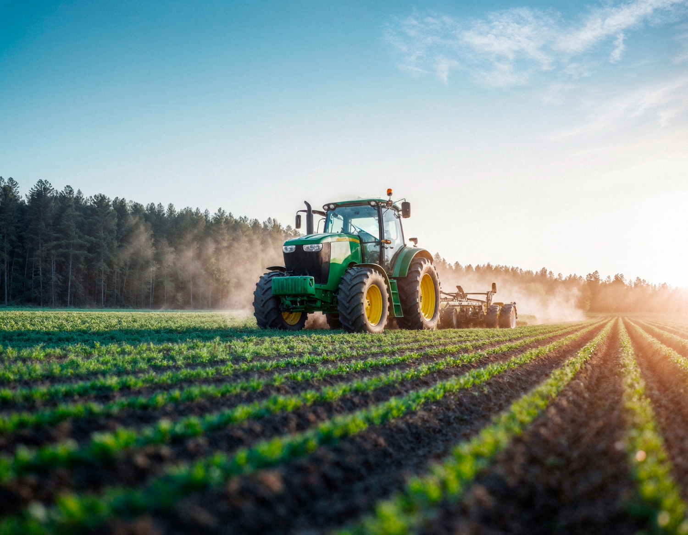
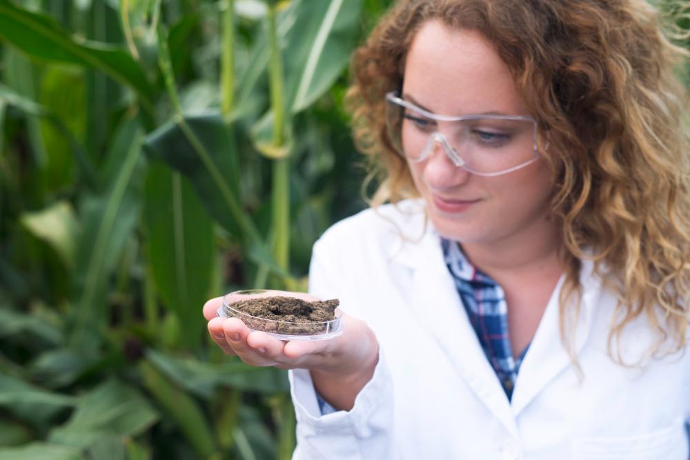
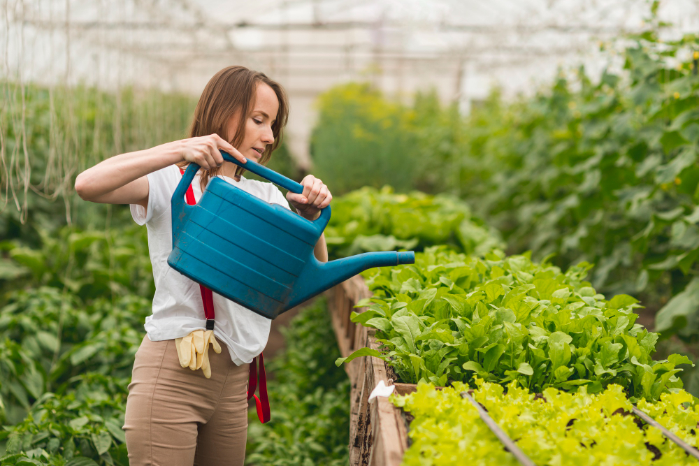
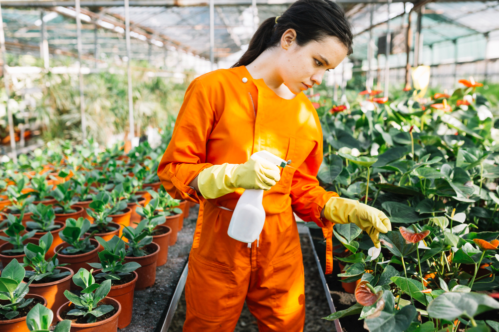
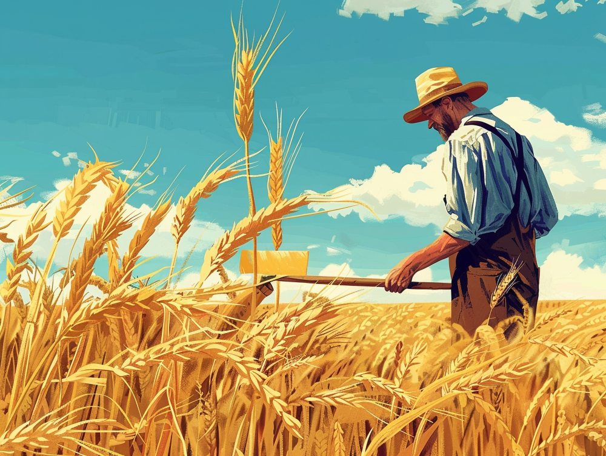
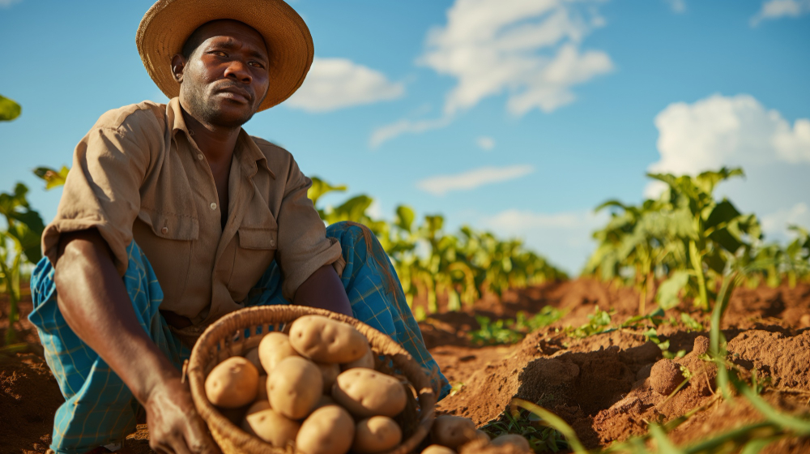
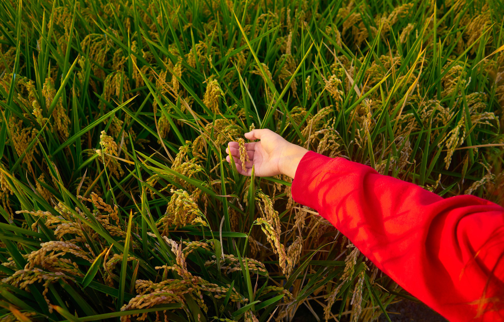
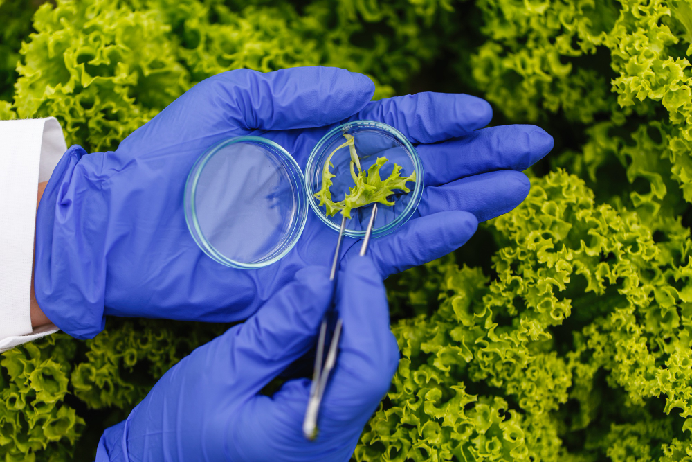
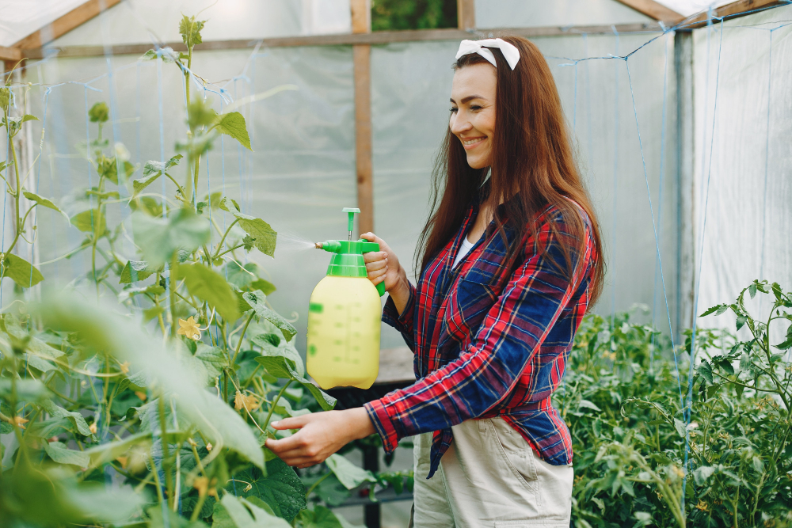
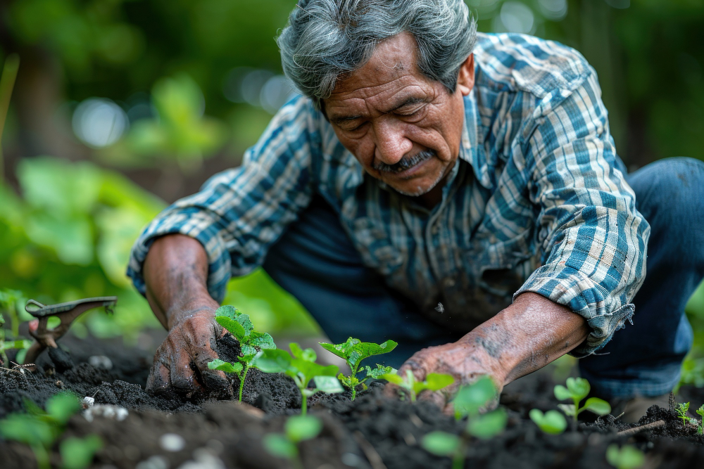

Farming Guides
Discover essential information on various crops

Beginner’s Guide to Farming
A step-by-step guide for new farmers, covering land selection, soil preparation, and basic crop choices.

Soil Preparation Techniques
Essential techniques for soil preparation, including plowing, tilling, and adding organic matter for healthy crops.

Efficient Water Management
Learn irrigation methods like drip and sprinkler systems, and water conservation practices to save resources.

Pest and Disease Control
Overview of integrated pest management (IPM) techniques to manage pests without excessive chemical use.
Crop Details
Discover essential information on various crops

Wheat
Wheat thrives in cooler climates and is one of the most widely grown crops globally, ideal for bread, pasta, and more.

Potato
Potatoes are a root crop that grows well in cooler, well-drained soils and are a global food staple.

Rice
Rice requires warm climates and plenty of water, making it ideal for flooded fields or paddies.
Pest Control Strategies
Discover essential information on various crops

Biological Control
Utilizing beneficial insects and organisms to control pest populations naturally.

Chemical Control
Applying pesticides selectively to manage pests while safeguarding beneficial organisms.

Physical Removal
Handpicking pests or using tools for immediate pest removal from crops.